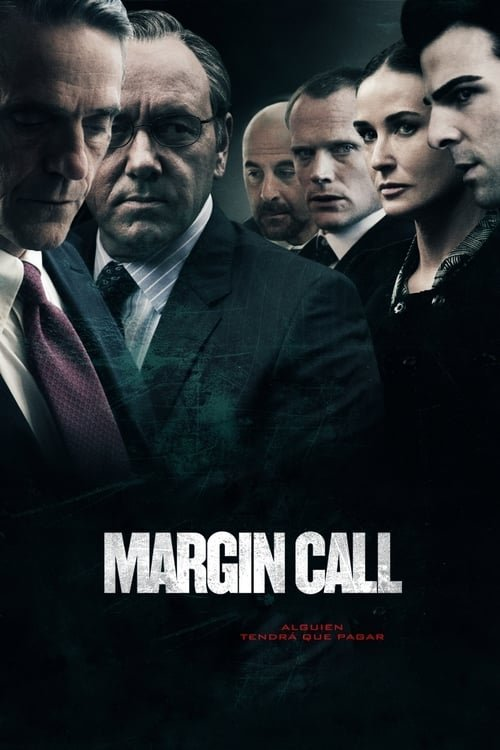

Margin Call (2011)
Sinopsis Rápida
En una noche fatídica en Wall Street, un grupo de ejecutivos de un banco de inversiones descubre una verdad aterradora que podría desencadenar una crisis financiera global. ¿Podrán detener el desastre o serán cómplices de su propia destrucción?
Sinopsis Detallada
Margin Call explora las 36 horas previas al colapso financiero de 2008 desde el interior de un banco de inversiones. La película sigue a un grupo diverso de empleados, desde los analistas junior hasta el CEO, mientras luchan con las implicaciones devastadoras de su descubrimiento de activos tóxicos. La tensión aumenta constantemente, revelando ambiciones, morales comprometidas y el peso de decisiones con consecuencias mundiales. El guion brillante y las actuaciones excepcionales convierten a Margin Call en un thriller absorbente que proporciona una perspectiva sombría y cautivadora de la avaricia y la corrupción en el corazón de Wall Street.
¿Por qué tenés que verla?
- Una mirada cruda y realista a la crisis financiera de 2008 desde la perspectiva de quienes la desencadenaron.
- Las actuaciones estelares de un reparto excepcional, incluyendo a Kevin Spacey, Jeremy Irons y Paul Bettany, añaden profundidad y realismo a los personajes.
- Margin Call sirve como una advertencia y un análisis de las prácticas financieras arriesgadas y sus devastadoras consecuencias.
- Un guion inteligente y de ritmo rápido mantiene la tensión y el interés hasta el final.
Idea Extra
Análisis comparativo de la representación de la crisis de 2008 en Margin Call con eventos y testimonios reales.
{{CONTENIDO_RELACIONADO}}